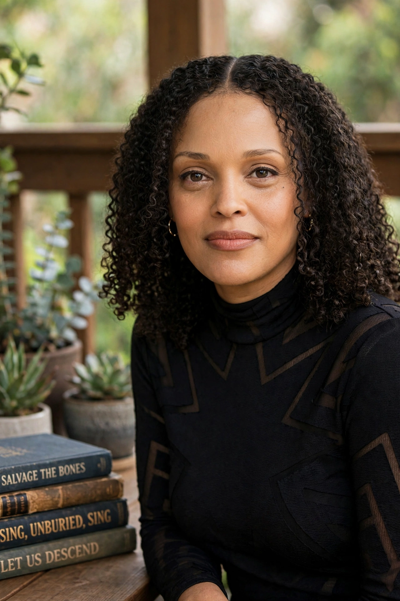

Jesmyn Ward
 | |
| Born | April 1, 1977, Berkeley, California, U.S. |
|---|---|
| Occupation | Novelist, memoirist, professor |
| Notable works | Salvage the Bones (2011), Men We Reaped (2013), Sing, Unburied, Sing (2017) |
| Awards | National Book Award for Fiction (2011, 2017), MacArthur Fellowship (2017) |
Jesmyn Ward (born April 1, 1977) is an American novelist and a professor of English at Tulane University. She is the only woman and the only African American to have won the National Book Award for Fiction twice, for Salvage the Bones (2011) and Sing, Unburied, Sing (2017).
Early life
Ward was born in Berkeley, California, and raised in DeLisle, Mississippi, on the Gulf Coast. She earned bachelor's and master's degrees from Stanford University and an MFA from the University of Michigan. Her family survived Hurricane Katrina, which flooded their home; the experience shaped her second novel, Salvage the Bones, about a poor Black family in the fictional Mississippi town of Bois Sauvage in the days before the storm.
Works
Her first novel, Where the Line Bleeds (2008), introduced the Bois Sauvage setting that recurs throughout her fiction. Her memoir Men We Reaped (2013) recounts the deaths of five young Black men close to her, including her brother Joshua, killed by a drunk driver in 2000. Sing, Unburied, Sing (2017), a road novel blending realism with the supernatural, won the National Book Award and was named one of the ten best books of the year by The New York Times. She edited the anthology The Fire This Time: A New Generation Speaks About Race (2016), a response to James Baldwin's The Fire Next Time. Her novel Let Us Descend was published in 2023.